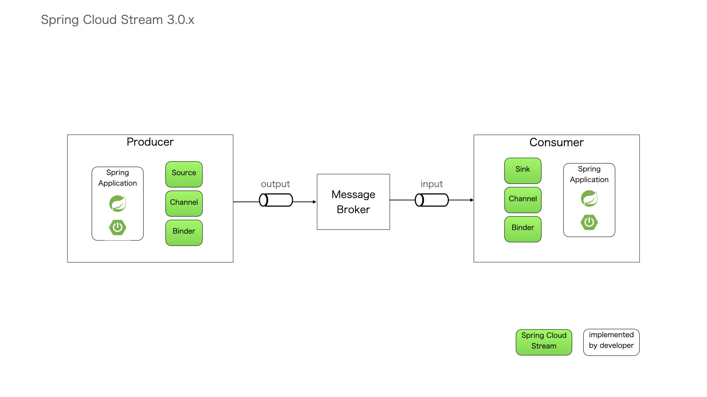
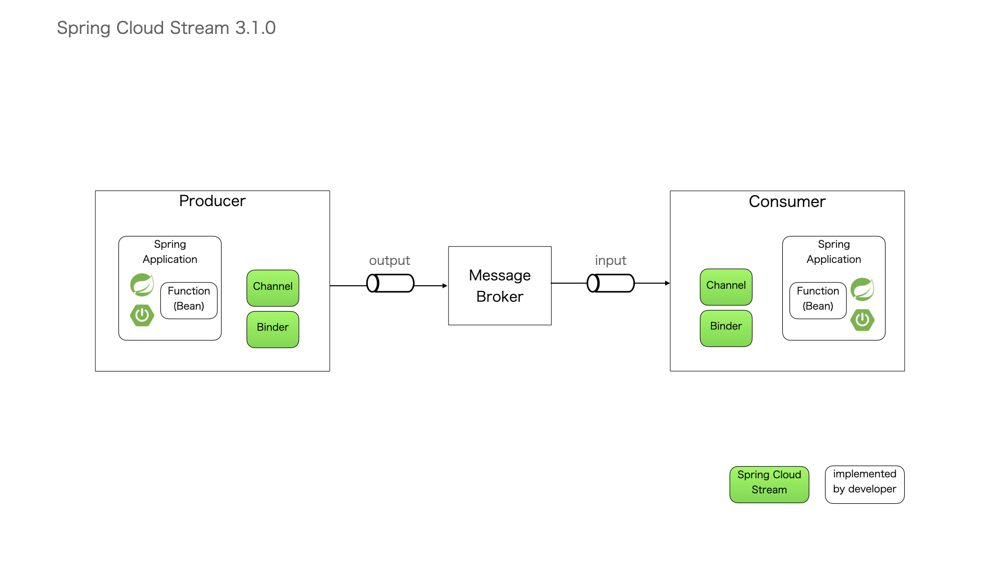

spring-cloud-stream¶
1. Spring Cloud Streamって？¶
- メッセージブローカとSpringアプリケーションを連携するためのフレームワーク
- Apache Kafka,RabbitMQ,Apache RocketMQ,Amazon Kinesis,…と連携可能
- Spring Cloud 2020.0.0のリリースに伴い、Spring Cloud Streamも3.1.0にバージョンアップ
リリーストレイン
| Spring Cloud Stream | Spring Boot | Spring Cloud |
|---|---|---|
| ??? [3.1.x] | 2.4.x | Ilford [2020.0.0] |
| Horsham [3.0.x] | 2.2.x | Hoxton |
| Germantown [2.2.x] | 2.1.x | Greenwich |
2. Spring Cloud Streamのアーキテクチャ¶
 3. Spring Cloud Stream 3.1.0での主な変更点¶
@EnableBindingによるSource(Producer)、Sink(Consumer)の定義が非推奨(https://javadoc.io/doc/org.springframework.cloud/spring-cloud-stream/latest/index.html)
Spring Cloud Functionを利用し、Javaの関数型インタフェースをBean定義すればSpringCloudStreamで自動的に呼び出される
開発者はJavaオブジェクトをSourceやSinkとして明示的に定義しなくてもよい
Producerのサンプル比較
- 3.0.x
@SpringBootApplication @EnableBinding(Source.class) //[1] @RestController public class SpringCloudStreamProducerApplication { public static void main(String... args) { SpringApplication.run(SpringCloudStreamProducerApplication.class, args); } Source source; //[2] public SpringCloudStreamProducerApplication(Source source) { this.source = source; //[3] } @PostMapping("register") @ResponseStatus(HttpStatus.CREATED) public Message register(@RequestBody Message message) { source.output().send(MessageBuilder.withPayload(message).build()); //[4] return message; } }
[1] @EnableBindingを付与。引数にSourceを宣言することでメッセージ送信するクラスとして認識される。[2] フィールド変数にSourceクラスを設定。[3] コンストラクタの引数にsourceを設定。[4] 送信するメッセージをsourceに設定する。- 3.1.0
@SpringBootApplication public class SpringCloudStreamProducerApplication { public static void main(String[] args) { SpringApplication.run(SpringCloudStreamProducerApplication.class, args); } @Bean //[1] public Supplier<Message> sendEvents() { //[2] return () -> { //[3] Message message = new Message(); message.setMessage(Integer.toString(new Random().nextInt(300))); return message; }; } }
[1] メッセージ送信用のBeanを定義する。[2] Messageインスタンスを生成し、メッセージ文字列を送信する関数（java.util.function.Supplier）を定義。[3] メッセージを送信する前に実行する任意の処理を記述。Consumerのサンプル比較
- 3.0.x
@SpringBootApplication @EnableBinding(Sink.class) //[1] public class SpringCloudStreamConsumerApplication { public static void main(String... args) { SpringApplication.run(SpringCloudStreamConsumerApplication.class, args); } @StreamListener(Sink.INPUT) //[2] public void println(Message message) { System.out.println("Received: " + message); } }
[1] @EnableBindingを付与。引数にSinkを宣言することでメッセージ送信するクラスとして認識される。[2] キューからメッセージを取得したときに実行するメソッドに@StreamListenerを付与。- 3.1.0
@SpringBootApplication public class SpringCloudStreamConsumerApplication { public static void main(String[] args) { SpringApplication.run(SpringCloudStreamConsumerApplication.class, args); } @Bean //[1] public Consumer<Message> log() { //[2] return message -> { System.out.println("Received: " + message); //[3] }; } }
[1] メッセージ受信用のBeanを定義する。[2] Messageインスタンスを受け取り、処理を実行する関数（java.util.function.Consumer）を定義。[3] メッセージを取得した後に実行する任意の処理を記述。
4. メッセージブローカを変更する場合¶
あとでメッセージブローカが変わってもSpringCloudStreamが対応していれば実装に影響なし
pom.xmlの依存ライブラリはメッセージブローカに応じて変更が必要
- RabbitMQを使う場合
<dependency> <groupId>org.springframework.boot</groupId> <artifactId>spring-boot-starter-amqp</artifactId> </dependency> <dependency> <groupId>org.springframework.cloud</groupId> <artifactId>spring-cloud-stream-binder-rabbit</artifactId> </dependency>
- Kafkaを使う場合
<dependency> <groupId>org.springframework.kafka</groupId> <artifactId>spring-kafka</artifactId> </dependency> <dependency> <groupId>org.springframework.cloud</groupId> <artifactId>spring-cloud-stream-binder-kafka</artifactId> </dependency>